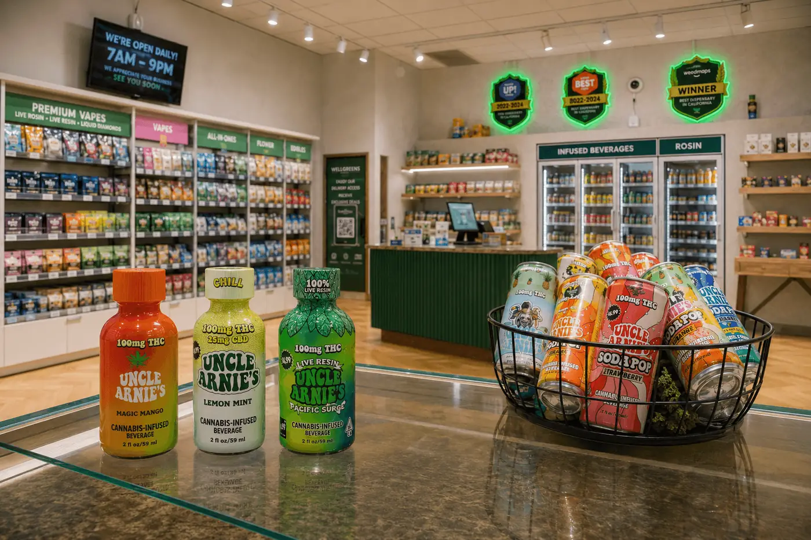
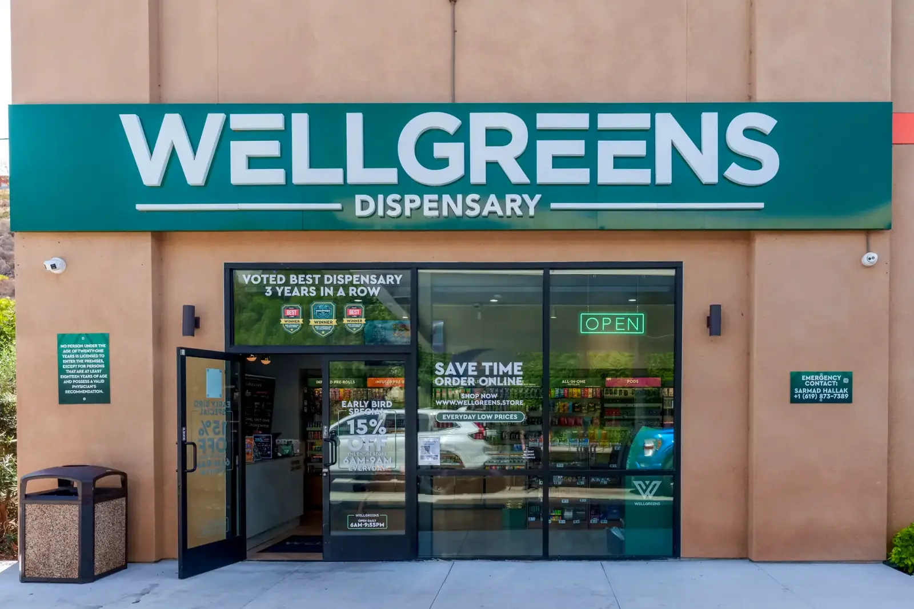

Brand Spotlight: Uncle Arnie’s THC-Infused Drinks at Wellgreens
August 19, 2026 · 14 min read

Uncle Arnie’s THC-Infused Drinks put a refreshing spin on cannabis by turning THC into something you can sip. At Wellgreens, we carry a growing selection of Uncle Arnie’s beverages for adults who want to explore cannabis without smoking or vaping, including fruity sodas, live resin drinks, and compact Power Shots.
If THC drinks are new to you, the idea is pretty simple. Instead of inhaling cannabis, you drink a beverage that contains THC. Uncle Arnie’s has built its brand around approachable flavors and multiple beverage formats, including Classic Drinks, Power Shots, SodaPop, and Social Spirits. The brand also uses nano-emulsified THC in its drinks and says effects are typically felt within 30 minutes or less, although every person can respond differently.
At Wellgreens, our goal is to make exploring cannabis products easier to understand. In this guide, we’ll break down what Uncle Arnie’s is, explain THC drinks in plain English, and show you the Uncle Arnie’s products you can find through our menu.
TLDR Quick Guide to Uncle Arnie’s
Uncle Arnie’s is a cannabis beverage brand focused on making THC available in familiar drink formats. Its broader lineup includes Classic Drinks, Power Shots, SodaPop, Social Spirits, and bundles, giving adult consumers several ways to explore cannabis beverages.
Here’s the quick version:
- THC drinks are a smoke-free option. You drink them instead of smoking flowers or using a vape.
- Uncle Arnie’s offers several beverage styles. The official Uncle Arnie’s Drinks lineup includes Classic Drinks, Power Shots, SodaPop, and Social Spirits.
- Our featured Wellgreens selection includes several 100mg products. These range from 12 oz sodas and 8 oz live resin drinks to compact 2 oz shots.
- Some products combine THC with other cannabinoids. For example, the featured Lemon Mint includes CBD, Tahitian Trip includes CBG, and Blueberry Night Cap includes CBN.
- Availability can change. Check our in-stock cannabis products before shopping.
- New to cannabis? Start by learning about serving sizes and product labels rather than assuming the whole container is one serving.
Uncle Arnie’s gives cannabis shoppers something different from the usual flower, vape, or gummy. If a fruity beverage sounds more approachable, there are plenty of flavors and formats to explore.
Detailed Breakdown

What Is Uncle Arnie’s?

Uncle Arnie’s is a cannabis beverage brand built around making THC drinks feel familiar rather than complicated. Instead of limiting itself to one kind of beverage, the brand offers several formats, from fruit-forward Classic Drinks and fizzy SodaPops to small Power Shots and Social Spirits. Its official shop currently lists flavors such as Iced Tea Lemonade, Cherry Limeade, Watermelon Wave, Blueberry Nightcap, Strawberry Kiwi, Orange SodaPop, and more.
That variety is one reason we like featuring brands such as Uncle Arnie’s. Not every cannabis shopper wants the same experience or consumption method. Our goal at Wellgreens is to carry a range of cannabis brands so customers can compare formats, flavors, cannabinoid combinations, and products more easily.
Uncle Arnie’s has even developed a broader lifestyle identity beyond beverages. Fans can browse official Uncle Arnie’s merchandise, while customers interested in the drinks themselves can explore the brand’s complete lineup directly from its website.
For our customers, though, the important part is simple: Uncle Arnie’s THC-Infused Drinks provide another way for adults to consume cannabis without having to smoke it.
What Exactly Is a THC-Infused Drink?
A THC-infused drink is a beverage containing tetrahydrocannabinol, better known as THC. THC is one of the main cannabinoids found in cannabis, and unlike an ordinary soda or juice, a THC beverage can produce intoxicating effects.
Think of the format as another branch of the cannabis menu. Flowers are inhaled, vapes produce vapor, gummies are eaten, and cannabis beverages are consumed as drinks. If you want a broader comparison, our guide to flower vs. vapes vs. edibles explains how common cannabis formats differ.
THC beverages can be especially interesting to adults looking for cannabis without smoking. There is no grinding flower or vape device involved. You still need to pay close attention to the product label, THC content, serving information, and your own experience level.
That last part is important because a bottle containing 100mg THC does not automatically mean the entire bottle is an appropriate serving for one person. Read the label and serving instructions before consuming any cannabis beverage.

What Makes Uncle Arnie’s THC-Infused Drinks Different?

There are plenty of ways to consume cannabis, so why put it in a drink? Part of Uncle Arnie’s appeal is that the format already feels familiar. Most people understand sodas, lemonades, fruit drinks, and small beverage shots, even if THC beverages are completely new to them.
The brand also says its beverages use nanomolecular technology. In simple terms, nano-emulsification breaks cannabis oil into very small particles so it can mix more evenly into a water-based drink. Uncle Arnie’s says its products typically have an onset of 30 minutes or less, but timing and effects can differ from person to person.
Want to understand this idea further? Our guide to fast-acting cannabis products explains the concept without making you feel like you need a chemistry degree.
Uncle Arnie’s also offers different THC strengths in parts of its broader lineup. For example, its official Classic Drinks are currently offered in 3mg, 5mg, and 10mg THC options, while its SodaPops are listed at 10mg. This is separate from the California dispensary products featured below, many of which are labeled 100mg per container on our Wellgreens menu.
Ultimately, the attraction is a choice. Customers can explore different flavors, container sizes, and cannabinoid combinations instead of treating every THC drink as the same product.
Uncle Arnie’s THC-Infused Drinks Available at Wellgreens

Now for the fun part: what can you actually find on our menu?
Our featured Uncle Arnie’s selection at Wellgreens Vista includes sodas, fruit-forward live resin beverages, and 2 oz shots. Because cannabis inventory changes, always check the individual product page or our current cannabis inventory before making a special trip.
Uncle Arnie’s 12 oz Drinks and Sodas
If you prefer something that looks and feels more like a familiar canned beverage, Uncle Arnie’s 12 oz options are a natural place to start browsing. These featured products are each labeled as containing 100mg THC per container, so customers should carefully check the package for serving information rather than treating the full container as one serving.
Orange 12 oz Soda 100mg
The Uncle Arnie’s Orange 12 oz Soda 100mg brings a classic orange-soda flavor into a THC-infused format. It is a straightforward option for shoppers who like familiar citrus flavors and want something different from gummies or flowers.
Pineapple Paradise 12 oz 100mg
For something more tropical, explore Uncle Arnie’s Pineapple Paradise 12 oz 100mg. Pineapple gives this option a vacation-style flavor profile that stands apart from traditional soda choices.
Strawberry 12 oz Soda 100mg
Uncle Arnie’s Strawberry 12 oz Soda 100mg is another easy-to-understand flavor. If strawberry is already one of your favorite fruit flavors, this gives you a familiar starting point within Uncle Arnie’s lineup.
Smacking Apple 12 oz Drink 100mg
Prefer something crisp and fruity? Uncle Arnie’s Smacking Apple 12 oz Drink 100mg adds an apple-focused choice to our selection.
Together, these larger drinks are good examples of what makes cannabis beverages interesting. Instead of choosing products only by strain or cannabis category, customers can also start with a flavor they already know they enjoy.

Uncle Arnie’s 8 oz Live Resin Drinks
Our menu also features several Uncle Arnie’s 8 oz beverages labeled as live resin drinks. Live resin is a type of cannabis extract made from fresh-frozen cannabis material, and it is commonly valued for preserving more of the plant’s aromatic compounds than some other extraction methods.
If terms like “live resin” sound confusing, that is completely normal. The easiest way to think about this group is that these drinks combine Uncle Arnie’s fruit-forward beverage style with a live resin cannabis formulation.
Featured options include:
- Blackberry Lemonade 8 oz Live Resin Drink 100mg: A berry-and-citrus combination for shoppers who enjoy tart and fruity flavors.
- Pacific Surge 8 oz Live Resin Drink 100mg: Another 8 oz live resin option for customers exploring the brand beyond its traditional fruit sodas.
- Raspberry Lemonade 8 oz Live Resin Drink 100mg: Raspberry and lemonade bring sweet and tart flavors together.
- Tropical Twist 8 oz Live Resin Drink 100mg: A tropical-flavored choice for shoppers looking beyond berry and citrus combinations.
These products give customers another option between a full-size soda and a small Power Shot. As always, the 100mg listed on the container should not be confused with a recommended individual serving. Check the package carefully before consuming.
Uncle Arnie’s 2 oz Power Shots
Want something much smaller than a 12 oz drink? Uncle Arnie’s Power Shots pack the beverage format into a compact 2 oz bottle.
The official Uncle Arnie’s lineup includes Power Shot flavors such as Blueberry Nightcap, Strawberry Kiwi, Sunrise Orange, Magic Mango, Tahitian Trip, and Lemon Mint. Some formulas also pair THC with cannabinoids such as CBN or other ingredients, so checking the exact label matters.
At Wellgreens, featured options include:
Lemon Mint THC + CBD
The Lemon Mint 2 oz Shot THC:CBD Drink 100mg combines THC and CBD in a compact lemon-mint format. CBD is another cannabinoid found in cannabis, so this product is worth comparing with THC-only options if you are interested in different cannabinoid combinations.
Magic Mango
The Magic Mango 2 oz Shot 100mg delivers a mango-inspired flavor in the smaller Power Shot format. It can appeal to shoppers who want a compact bottle rather than a full-size drink.
Strawberry Kiwi
The Strawberry Kiwi 2 oz Shot 100mg combines two familiar fruit flavors. The official Uncle Arnie’s shop also lists Strawberry Kiwi within its Power Shot family.
Sunrise Orange
The Sunrise Orange 2 oz Shot 100mg provides another citrus-focused option in a small format. Uncle Arnie’s official FAQ notes that its Sunrise Orange shot has an added energy component, so checking the full ingredient and product label is especially important.
Tahitian Trip THC + CBG
The Tahitian Trip 2 oz THC:CBG Drink 100mg pairs THC with CBG. CBG stands for cannabigerol, another cannabinoid found in cannabis, giving customers another formulation to compare.
Blueberry Night Cap THC + CBN
The Blueberry Night Cap 2 oz THC:CBN Drink 100mg combines THC with CBN. Uncle Arnie’s official Power Shots lineup similarly identifies Blueberry Nightcap as a THC-and-CBN product.
The small bottles make Power Shots look simple, but potency still matters. Read the serving information carefully and never assume that a small container automatically means a low dose.

How Do You Choose an Uncle Arnie’s Drink?

With sodas, live resin drinks, and shots all sitting under one brand, choosing can seem harder than it needs to be. We recommend breaking the decision into a few simple questions.
1. What flavor sounds good?
Start with something familiar. Orange and strawberry work well for shoppers who like classic soda flavors, while pineapple, mango, blackberry lemonade, and tropical options offer something more adventurous.
2. What format do you prefer?
A 12 oz beverage gives you a traditional drink format, while an 8 oz live resin beverage offers a different cannabis formulation. A 2 oz Power Shot is much more compact. Format does not tell you how much you should consume, so always use the label to understand serving size.
3. Which cannabinoids are in it?
Some products focus on THC, while others combine THC with CBD, CBG, or CBN. These abbreviations can look like alphabet soup when you are new to cannabis, so ask our team questions rather than guessing.
4. How experienced are you with cannabis?
Someone completely new to cannabis should approach a high-potency container very differently from an experienced consumer. Our dispensary guide for beginners and guide to visiting a dispensary for the first time are useful starting points.
The best product is not automatically the strongest one. The better choice is the product whose format, serving information, and ingredients you understand and feel comfortable with.
THC Drinks for a Smoke-Free and Social Format
One of the biggest reasons cannabis beverages stand out is simple: they are drinks. For adults who do not want to smoke flower or use a vape, a THC beverage offers a familiar, smoke-free format.
Beverages can also feel natural in adult social settings where other people are holding drinks. That does not mean THC should be treated exactly like alcohol. Cannabis and alcohol affect the body differently, and responsible consumption still matters. Our guide to cannabis for social situations explains some considerations to keep in mind.
If potency is your main concern, our guide to low-THC cannabis products can also help explain why more THC is not necessarily better. Uncle Arnie’s own direct-to-consumer Classic Drinks, for example, currently include 3mg, 5mg, and 10mg THC options.
The key is to separate the fun flavor from the potency. A cannabis drink may taste like a familiar fruit beverage, but it still contains an active cannabinoid and should be treated accordingly.

Understanding Onset and Duration

Cannabis beverages can behave differently from traditional edibles, but there is no stopwatch that works for everyone. Body chemistry, product formulation, food intake, serving size, and other factors can all influence when effects begin and how long they last.
Uncle Arnie’s states that its nano-formulated drinks typically begin working within 30 minutes or less. That is the brand’s general guidance, not a guarantee for every consumer.
Our guides to fast-acting cannabis products and short vs. long cannabis effects provide more context about why different formats may feel different.
Most importantly, do not rush into another serving because you think the first one “isn’t working.” Follow the product directions, understand the serving size, and give yourself enough time.
How to Shop Uncle Arnie’s at Wellgreens
We make it easy to check what is available before you head out. Because cannabis inventory can change, we recommend browsing our in-stock cannabis products rather than assuming a particular flavor will always be on the shelf.
You can also explore our Wellgreens locations to find a dispensary near you. Where service is available, our cannabis delivery options can make shopping even more convenient.
If this is your first time buying ingestible cannabis in California, our guide to how to legally buy edibles in California provides useful background. You can also visit our Wellgreens FAQ for common questions about shopping, eligibility, orders, and store policies.
Our approach at Wellgreens is not about pushing you toward the strongest product on the menu. As explained on About Wellgreens, we want cannabis shopping to feel approachable and transparent. That means helping you understand what you are looking at before you buy it.

Beyond the Bottle: The Uncle Arnie’s Brand

Uncle Arnie’s has built a broader brand around cannabis beverages rather than treating drinks as a side category. Its official lineup spans Classic Drinks, Power Shots, SodaPop, Social Spirits, and bundles, giving the company a distinctive place within the growing cannabis beverage category.
The brand also extends beyond the beverage itself through Uncle Arnie’s merchandise, including branded apparel and accessories. That lifestyle approach helps explain why its products use bold names and recognizable fruit flavors rather than presenting cannabis beverages like something from a science lab.
At Wellgreens, we enjoy giving our customers access to brands that offer genuinely different product formats. You can explore more educational guides through our cannabis resources or browse our wider selection of cannabis brands.
Key Takeaways
Uncle Arnie’s THC-Infused Drinks give adult cannabis consumers an alternative to smoking, vaping, and traditional solid edibles. With sodas, live resin beverages, and Power Shots available through our Wellgreens menu, there is plenty to compare before deciding which product fits your preferences.
- Uncle Arnie’s specializes in cannabis beverages, with a broader lineup that includes Classic Drinks, Power Shots, SodaPop, and Social Spirits.
- Our featured Wellgreens selection includes 12 oz sodas, 8 oz live resin drinks, and compact 2 oz shots.
- Featured flavors include Orange, Strawberry, Pineapple Paradise, Smacking Apple, Blackberry Lemonade, Raspberry Lemonade, Magic Mango, Strawberry Kiwi, and more.
- Some featured products combine THC with other cannabinoids, including CBD, CBG, or CBN.
- Many of the Uncle Arnie’s products featured on our Wellgreens Vista menu are labeled 100mg THC per container, so customers should always check serving information before consuming.
- Uncle Arnie’s says its nano-formulated beverages typically have an onset of 30 minutes or less, although individual experiences can vary.
- Product availability changes, so checking our live inventory before shopping is the easiest way to see what is currently available.
Ready to see what is on the menu? Browse our in-stock cannabis products, find your nearest Wellgreens location, or explore more of our cannabis resources. For questions specifically about the manufacturer or its products, you can also contact Uncle Arnie’s through the brand’s official website.
Frequently Asked Questions
01What are Uncle Arnie’s THC-Infused Drinks?
Uncle Arnie’s THC-Infused Drinks are cannabis beverages that contain THC instead of being ordinary sodas, juices, or shots. The brand makes several formats, including Classic Drinks, SodaPop, Power Shots, and Social Spirits. At Wellgreens, our featured selection includes sodas, live resin drinks, and 2 oz shots.
02How much THC is in Uncle Arnie’s drinks at Wellgreens?
Many of the Uncle Arnie’s products featured on our Wellgreens Vista menu are labeled as containing 100mg THC per container. That number describes the container and should not automatically be treated as a single serving. Always check the product label for serving information and choose an amount appropriate for your experience level.
03How quickly do Uncle Arnie’s THC drinks work?
Uncle Arnie’s says its nano-formulated beverages typically have an onset of 30 minutes or less. However, cannabis affects people differently, so the exact timing can vary. Follow the product directions and avoid quickly taking more simply because you have not noticed an effect yet.
04Does Uncle Arnie’s make drinks with CBD, CBG, or CBN?
Yes, some Uncle Arnie’s products combine THC with other cannabinoids. Our featured Wellgreens menu includes Lemon Mint with CBD, Tahitian Trip with CBG, and Blueberry Night Cap with CBN. These cannabinoids are different from THC, so check the product label carefully to understand exactly what you are purchasing.
05Where can I buy Uncle Arnie’s THC-Infused Drinks at Wellgreens?
Availability can vary because cannabis inventory changes regularly. The easiest option is to check our in-stock cannabis products and then find a nearby store through our Wellgreens locations page. If delivery is available in your area, you can also check our cannabis delivery options before ordering.
Shop this guide
Keep reading

Why Is Your Cake Disposable Vape Not Hitting and What Should You Check?
You pick up your Cake disposable vape, take a draw, and… nothing. No vapor, no response, just a device that seems to have called it quits…

Cannabiotix Flower vs Concentrates: Which Product Type Fits Your Needs?
If you’re comparing Cannabiotix flower vs concentrates, you’ve probably noticed that both categories offer distinct characteristics, from…

Live Rosin vs Live Resin: Which Concentrate Should You Choose?
Two cannabis concentrates. Similar names. Very different production methods. If you’ve been comparing live rosin vs…
Ready to Start?
Premium cannabis. Expert guidance. Fast pickup. Join thousands of San Diegans who trust Wellgreens.